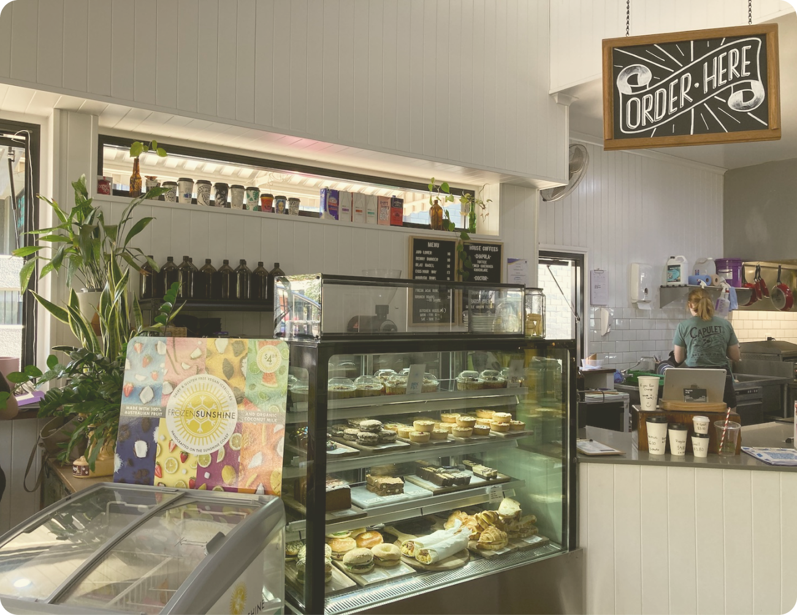
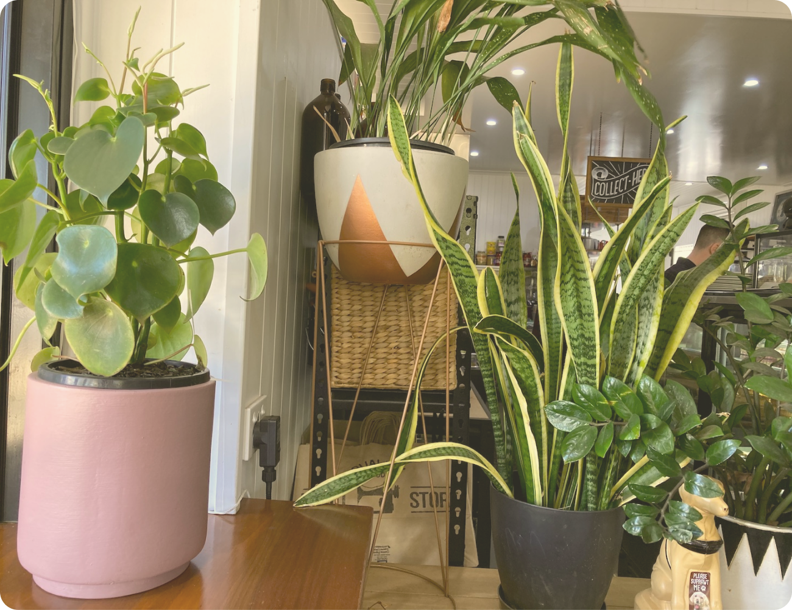
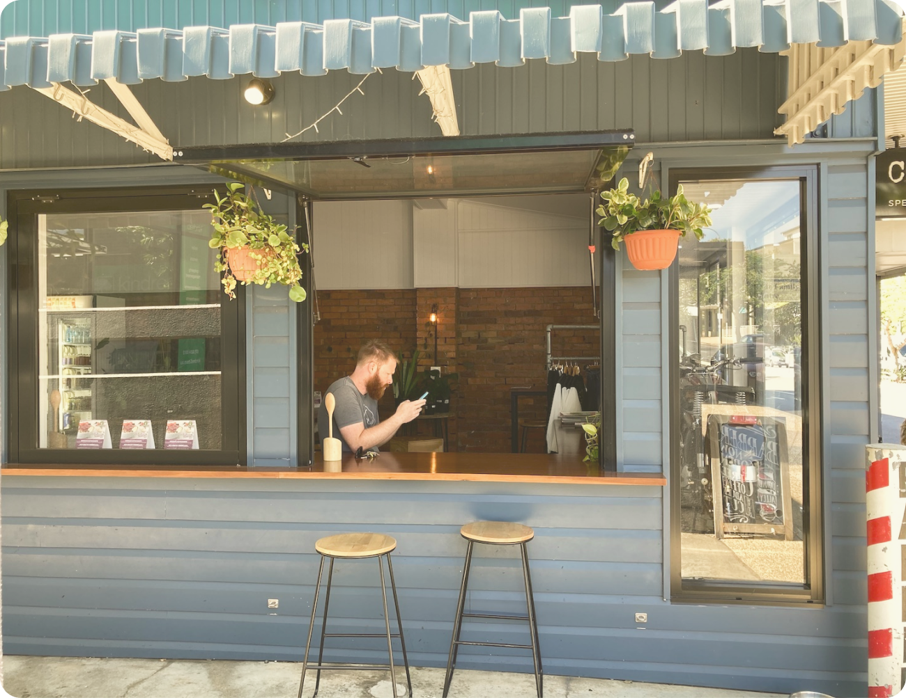
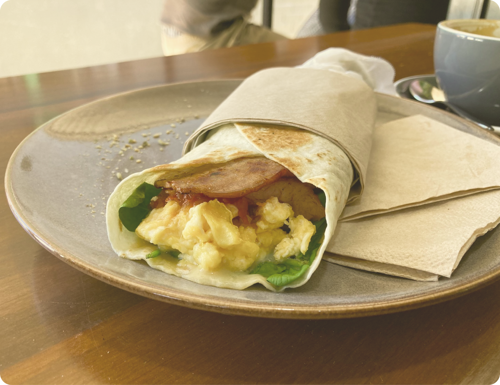
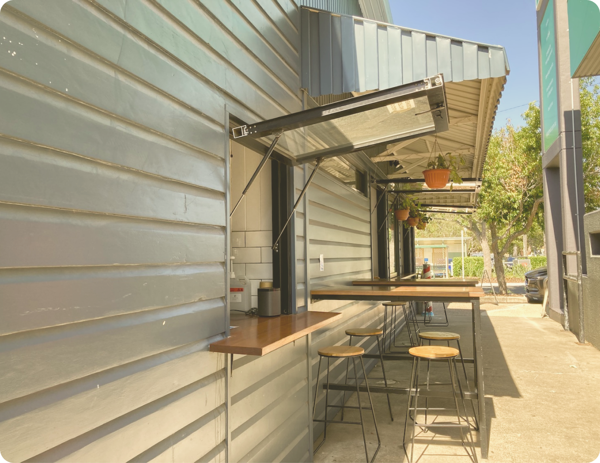
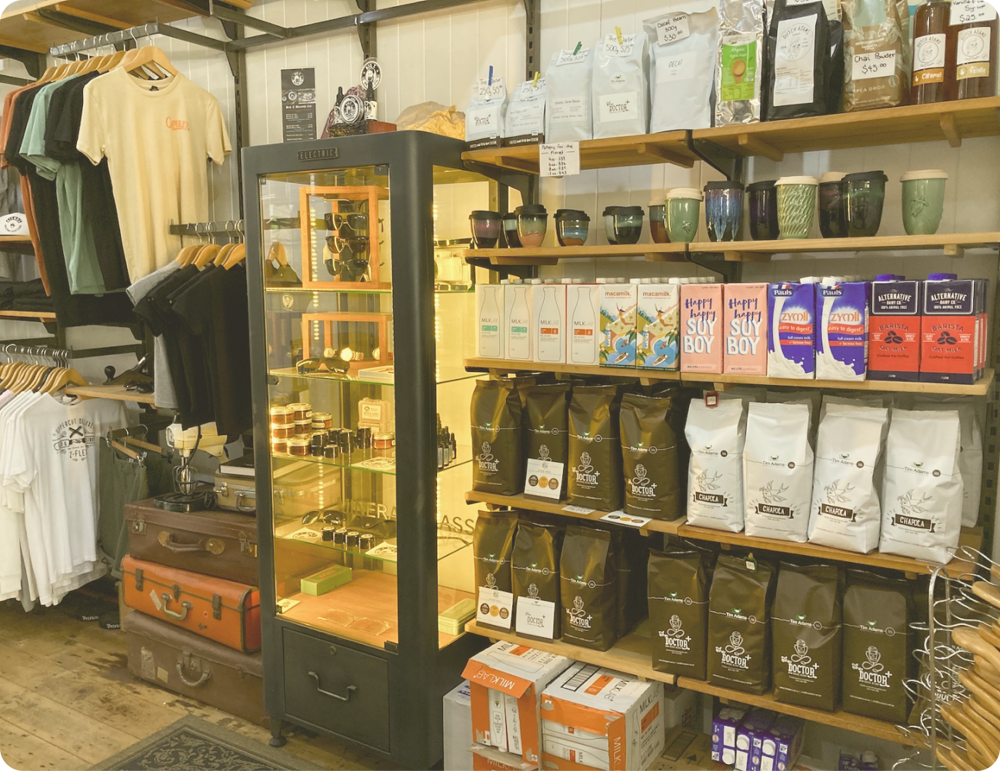
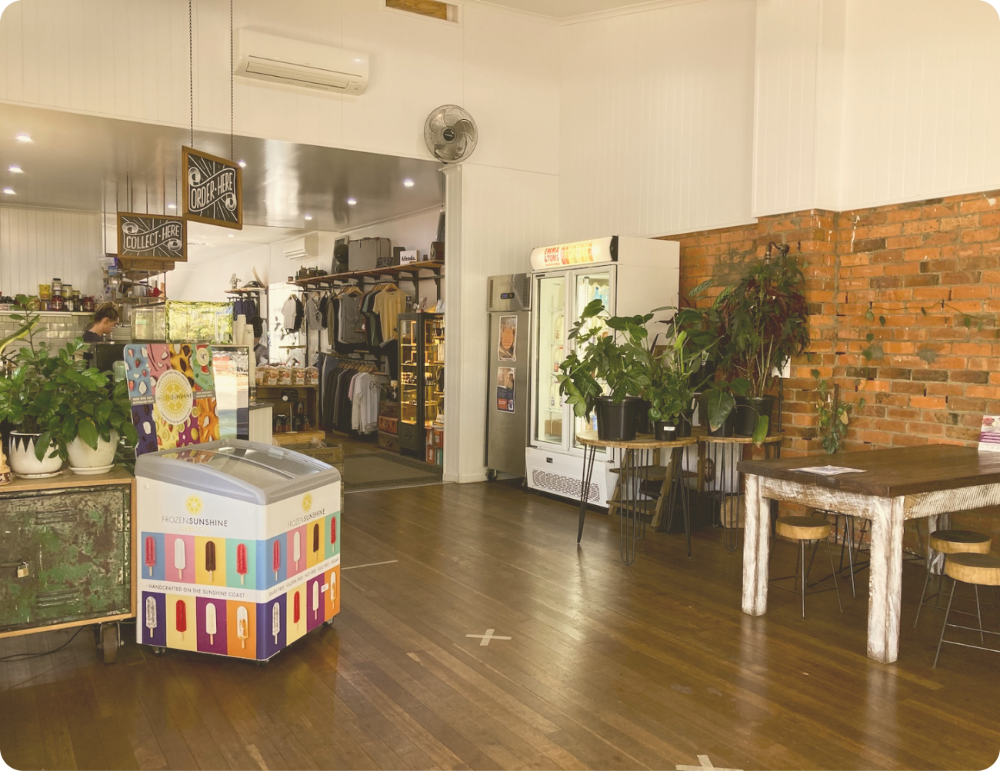
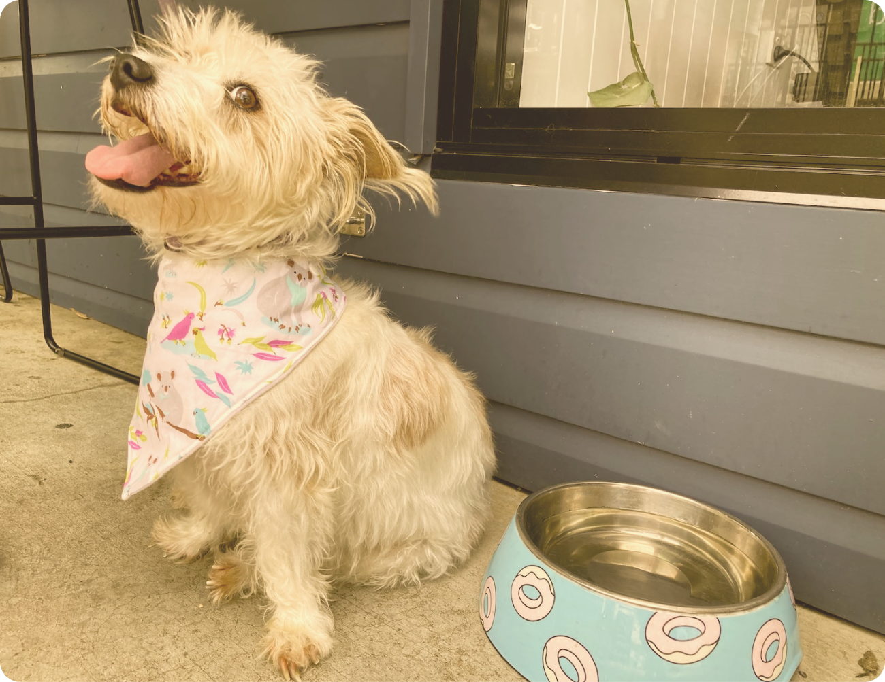
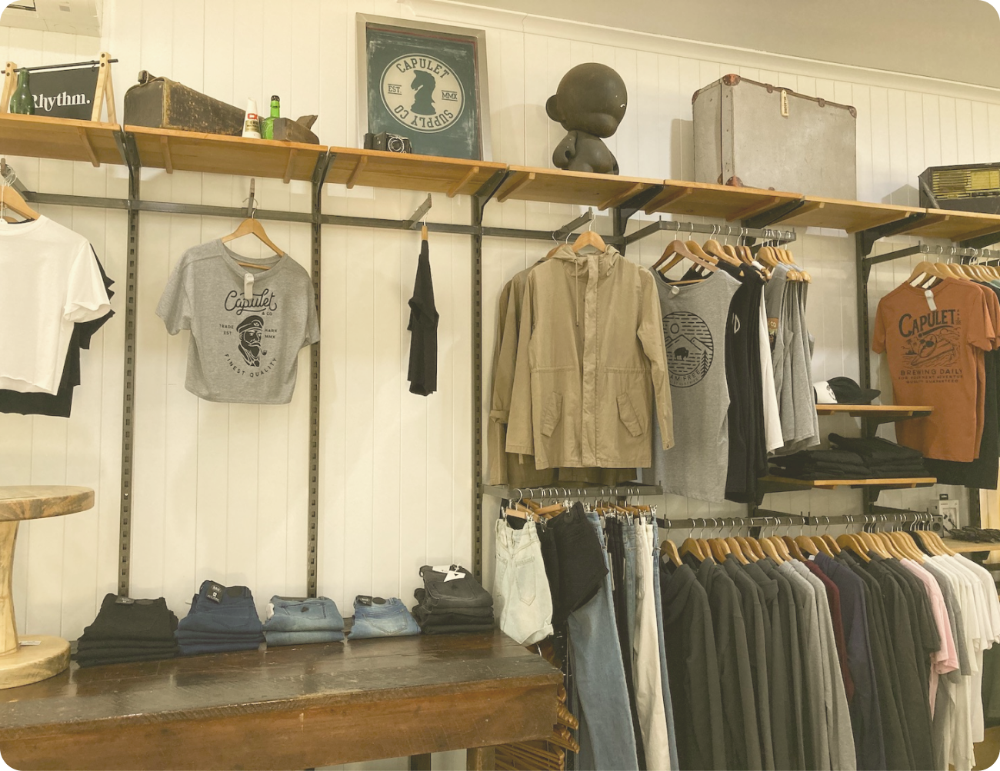
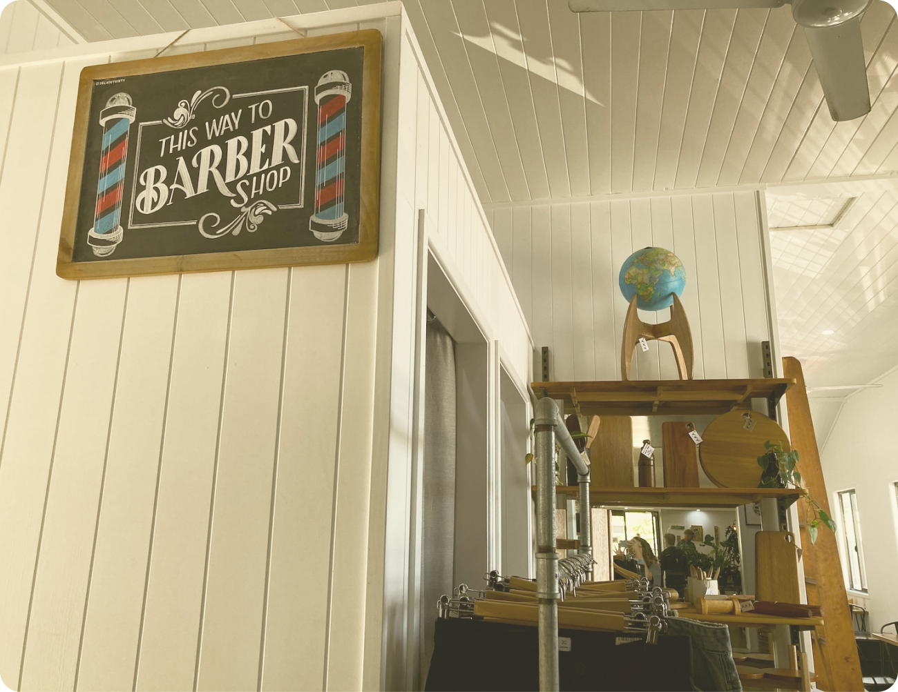

Starting out life as an apparel company with a rock and roll meets motorbike culture aesthetic, Capulet & Co has expanded to be the best coffee spot and brunch hangout in Sandgate.
Covered in house plants (that you can take home with you), local art and vintage decor Capulet & Co has a relaxed vibe that’ll take you back to earlier days.
There’s a mix of indoor and outdoor seating spaces, and some spaces that even combine the best of indoors and outdoors.
There’s a wide range of food options, have a hot breakfast, a delicious lunch or locally made pastries, cakes and coffees.
You can also pick up your coffee to go from the laneway takeaway window.
Everyone’s dietary needs are covered too with a huge range of milks to choose from and a wide range of hipster foods that will appeal to your millennial kids.
If you’ve got the grandkids in tow, help them beat the Queensland heat with a Frozen Sunshine ice block, handmade with natural ingredients on the Sunshine Coast.
Of course, if all your grandkids are a little furrier in nature, Capulet & Co has you covered too with plenty of water bowls on hand, shady spots to lie down and puppy ice cream from Gold Coast based Hugo’s Ice Creamery; for when you really want to spoil them.
Not to be missed is Capulet & Co’s founding apparel. High quality makes, local designs, natural fibres and that vintage t-shirt feel (that you used to have to wear a shirt for years to get). They stock kids through to adult sizes and also stock Afends sustainable denim.
Another cheeky surprise in store is The Laneway Barbers. Step back in time as you enter this proper barber’s shop, fitted out with retro furniture, to get a perfect cut and shave. And the best part? A free coffee with your cut.
